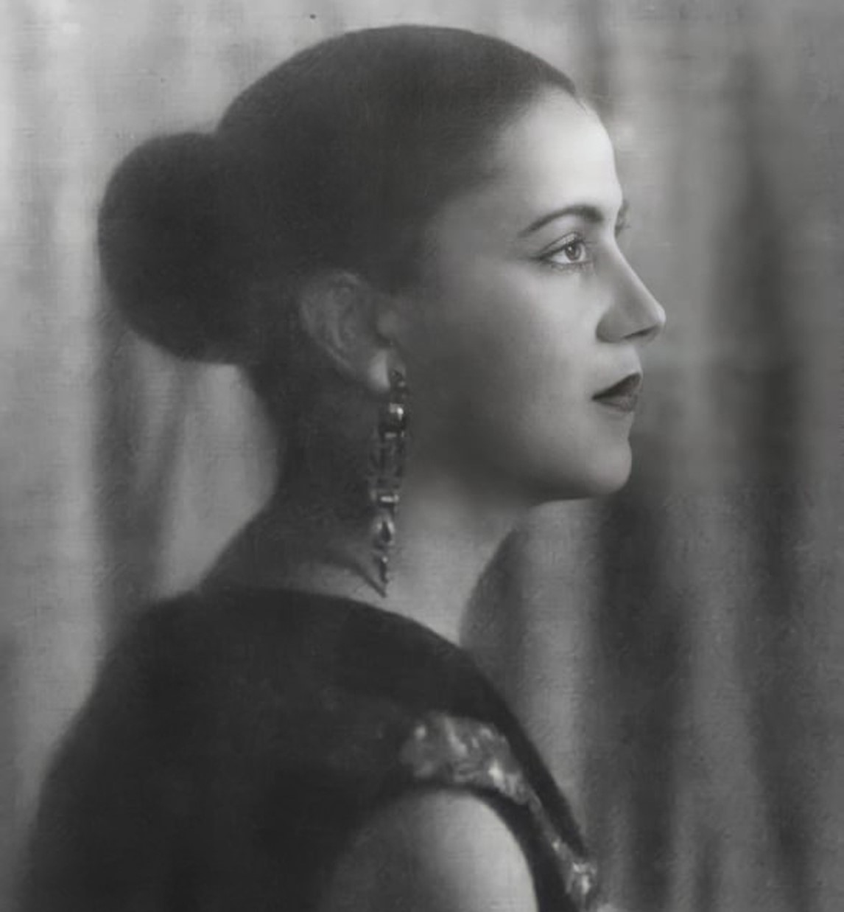
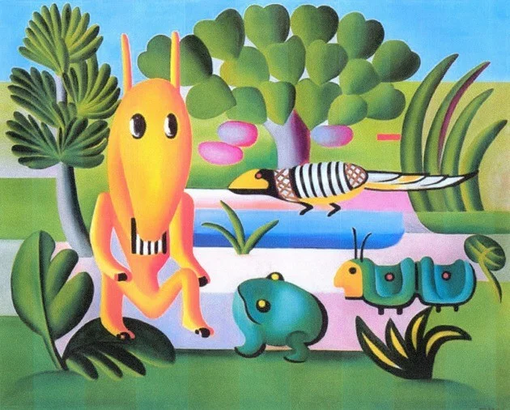
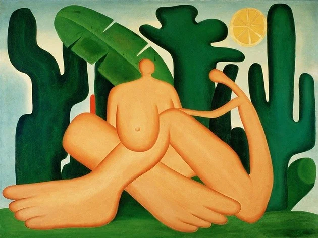
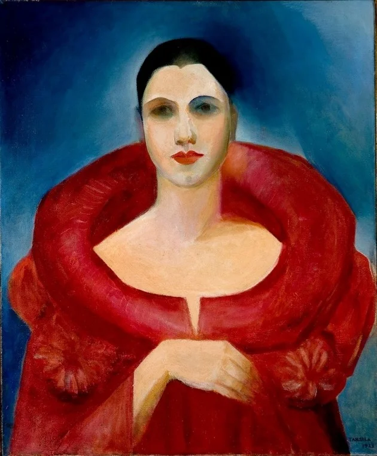
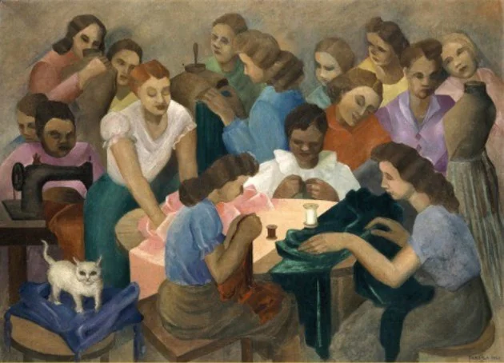
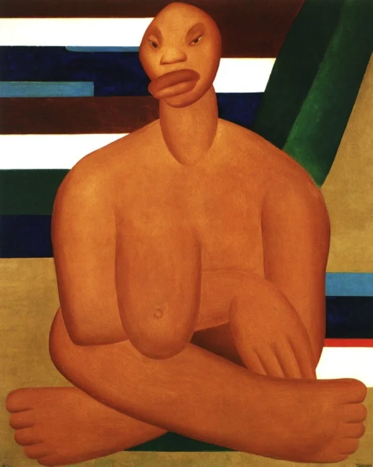
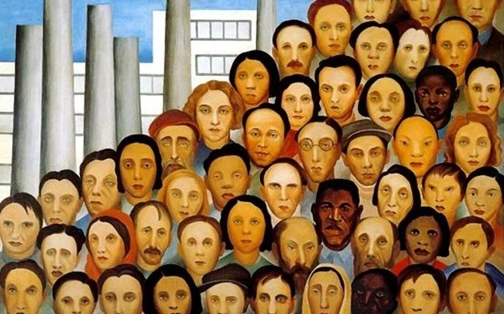
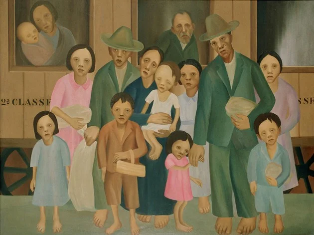

Tarsila do Amaral

Sobre o artista
Tarsila do Amaral, uma das figuras mais reverenciadas na história da arte brasileira, deixou um legado eterno ao imortalizar a identidade cultural e as questões sociais do Brasil em suas pinturas. Nascida em 1886, sua maestria artística brilha em obras icônicas como "Abaporu" e "Operários", que revelam a essência do país com profundidade emocional, cores vibrantes e formas ousadas. Para Tarsila, a arte era mais do que uma mera representação visual; era uma voz poderosa para a transformação social. Ela desafiou convenções e foi pioneira no movimento modernista brasileiro, trazendo uma nova perspectiva à arte do país.
Localização
Capivari, São Paulo
Data de nascimento
1 de setembro de 1886
Obras

A cuca
1924
Abaporu
1928

Antropofagia
1929

Autorretrato
1923

Costureiras
1936

A negra
1923

Operários
1933

Segunda classe
1933